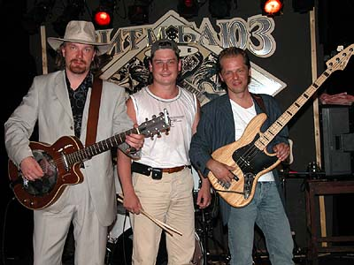
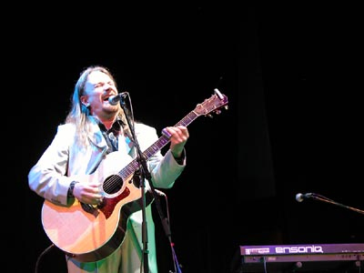
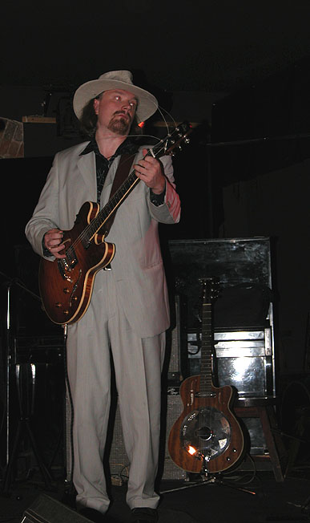

Lonesome Blues Band на сегодня - один из наиболее ярких и интересных музыкальных коллективов Москвы. Группа удачно сочетает акустическую и электрическую игру. И вполне органично в ее концертной программе соединяются элементы блюзовой архаики с современным блюзовым драйвом и отдельными джазовыми приемами. И так же удачно репертуар ансамбля представляет оригинальные трактовки общеизвестных блюзовых стандартов вместе с очень интересными авторскими сочинениями участников ансамбля. В нынешнем своем виде, как трио, группа существует с мая 2003г. Однако Lonesome Blues Band быстро нашли собственное лицо и заняли заметное место на многообразной блюзовой сцене. Собственный взгляд на "московскую" трактовку блюза и хороший концертный опыт помогли в этом участникам коллектива.
В Lonesome Blues Band играют музыканты, снискавшие первую широкую известность в рамках популярнейшего в свое время ансамбля Blues Hammer Band. Тот ансамбль был основан на союзе Михаила Петровича Соколова, признанного метра отечественной блюзовой сцены и вполне еще молодого, но быстро прогрессировавшего гитариста Николая Садикова. Blues Hammer Band просуществовал 6 лет, записав один альбом и приняв участие во многих отечественных и зарубежных блюзовых фестивалях, включая выступление на престижном харп-фестивале в Троссингеме (Германия). Творческие пути Соколова и Садикова разошлись в 2002 году, и они оба стали создавать коллективы с принципиально новыми звучаниями. Свою новую группу Николай Садиков назвал по одному из сочиненных им блюзов: Lonesome Blues. Его союзниками по этому новому проекту стали двое из музыкантов, игравших вместе с ним и раньше: Петр Маевский и Николай Гречанников.

Николай Садиков & LONESOME BLUES BAND уникальны по звучанию и в своём творчестве соединяют элементы традиционного кантри-блюза и джазовой импровизации с горячим блюзовым драйвом и виртуозной игрой.
В репертуаре группы авторские блюзовые композиции на английском и русском языках, а также большое колличество блюзовых стандартов и малоизвестных классических блюзов. Кроме того, музыканты используют в своих выступлениях редкий экзотично выглядящий инструмент (National steelbody guitar:)
Николай Садиков & LONESOME BLUES BAND с неизменным успехом выступают в самых престижных московских музыкальных клубах как с электрическим звучанием (электро-гитара, бас-гитара, барабаны:), так и с камерным (акустическая гитара, контрабас:). В любом случае, равнодушных на их концертах не бывает.

Николай Садиков - признанный мастер блюзовой гитары, виртуозно владеющий слайдовой техникой, обладающий запоминающимся тембром голоса и характерной манерой пения. Редко кто из виртуозов так легко и естественно умеет чередовать акустический и электрический гитарных саунд, слайдовую и пальцевую технику игры. Это вариативность позволяет ему значительно расширять возможности звучания его небольшого ансамбля. Он же является автором таких блюзовых хитов, как Lonesome Blues, What Have You Done, Charter Flight Blues: и других, тепло встреченных московскими почитателями блюза.
Петр Маевский - музыкант, прекрасно владеющий как бас-гитарой, так и контрабасом, свободно ориентирующийся во всех стилях от легкого джаза до блюз-рока.
Александр Гречаников - барабанщик, обладающий потрясающей техникой исполнения и ураганной мэнергетикой.

1993г. Николай Садиков, Александр Гуторов, Алексей Карпухин и московская певица Энтони организуют группу "Fly To Bluesland". В том же году они записывают демонстрационную запись, в которую входят авторские блюзы "What Have You Done", "Fly To Bluesland", "Square Wheels".1994г. Группа "Fly To Bluesland" выступает в московских клубах и активно репетирует.
1995г. Николай Садиков и Энтони принимают участие в фестивале "Lady Blues" в Арбат блюз клубе. В том же году к группе присоединяется барабанщик Александр Гречаников.
1996г. Летом Николай Садиков и Михаил Соколов создают дуэт, к которому присоединяется контрабасист Николай Второв и они успешно дебютирует как трио на 1м московском фестивале губной гармоники, посвященном 100-летию фирмы "Хоннер", главного производителя губных гармоник в мире. Осенью к ним присоединяется Александр Гречаников, группа становится квартетом и получает название "Music Hammer Band".
1997г. "Music Hammer Band" в полном составе принимают участие в Хоннеровском фестивале и добиваются высшей оценки EXCELLENT - "отлично" в номинации "группа". Празднование первого Дня Рождения Группы в "Арбат блюз-клубе". Выступление на юбилейном концерте газеты "Московский комсомолец".
1998г. Группа принимает новое название и выпускает видео-концерт "Blues Hammer Band - Live at Forte". Участвует в Нижегородском джазовом и блюзовом фестивалях.
1999г. В коллектив вошел новый контрабасист Петр Маевский(ex-Blues Cousins). Гитара Николая Садикова звучит на двух треках альбома, подводящего итоги отечественного блюза за 90-е годы: "Весь Этот Наш Блюз".
2000г. Живые концерты в телеэфире: на "НТВ" в программе Д.Диброва "Антропология" и на "Дарьял-ТВ". С успехом участвует в международный московском блюз фестивале "Blues Summit" и Московском фестивале губной гармоники.
2001г. Группа участвует в качестве почётных гостей в международном блюзовом фестивале в городе Загреб (Хорватия). Её выступление транслируется по интернету в "Real Time". Принимает участие в программе Андрея Макаревича "Макарена" на ОРТ. Выступает на Московских фестивалях губной гармоники и блюза.
2002. В апреле в группу приходит молодой органист Евгений Лепихин "Jimmy Alligator". В июне творческие пути коллектива и Михаила Соколова расходятся, и группа меняет название на Lonesome Blues Band. В июле принимает участие в фестивале блюза "Дельта Невы" в Санкт-Питербурге. В сентябре представляет дебютный альбом подводящий итог шестилетнего сотрудничества с Михаилом Соколовым. Альбом получает название Blues Hammer Band/Lonesome Blues и в него входят блюзы Николая Садикова "Lonesome Blues", "Standin' At The Window" и другие.
2003. В апреле группа принимает участие в фестивале "Блюз без границ". В мае группу покидает Евгений Лепихин и коллектив становится трио. В июле Николай Садиков записывает сольный диск с русскоязычными блюзами под названием "Tequila Блюз".
Официальный сайт группы Lonesome Blues Band - www.sadikov.ru